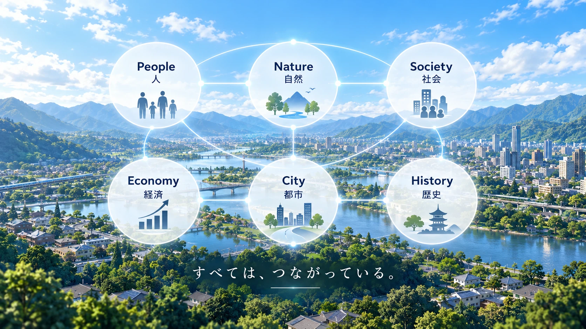
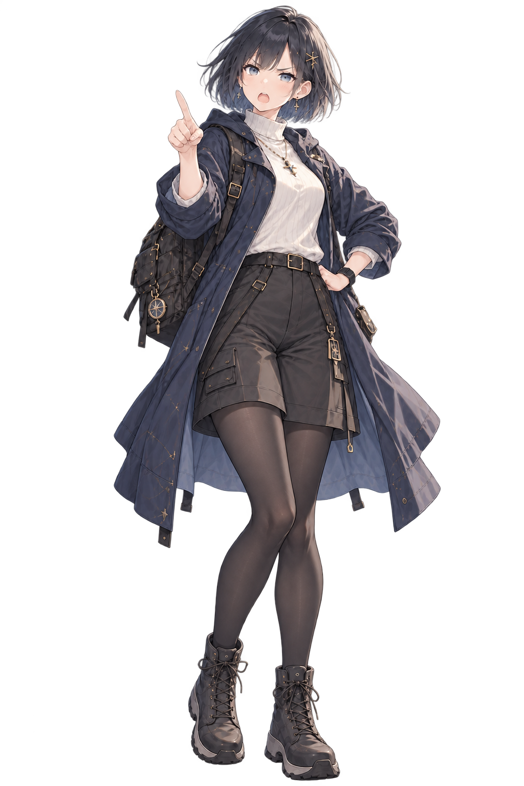
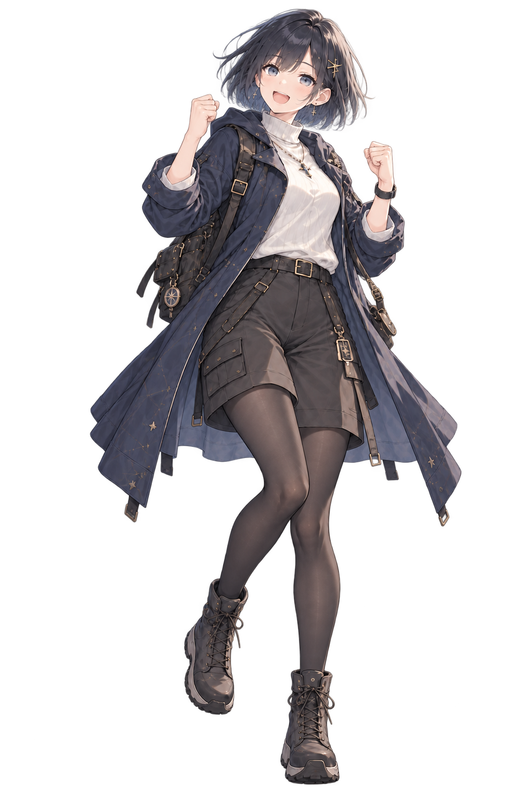

01 / WHY THIS WORLD?
Not placing a world.
Letting a world become itself.
Water. People. Work. Roads. A city. Then a familiar landscape.The world we see now is the result of prior environments, choices, and interactions. MachiVerse aims to treat that path itself as part of the world.

02 / CONNECT THE WORLD
People, nature, economy —
inside the same world.
Terrain and water affect life. Human activity shapes society. Resources, logistics, and markets appear in the form of cities. Those changes persist as history and influence what comes next.

03 / DIVER
From watching the world
to living inside it.
MachiVerse calls the participant role a “Diver.” The long-term direction is for your actions to become events in the world, affect others, and eventually become part of its history.
In Alpha 1.0, a minimal participation operation already travels from General View through Gateway to Simulation Core, and the confirmed WorldState returns to the View.
See how it is connected04 / WHERE WE ARE
Not finished yet.
But already moving.
Alpha 1.0 is the first foundation that connects the vision to a real system. Simulation Core, Gateway, General View, and Administration View are connected, including state synchronization and persistence/recovery.
05 / OPEN SOURCE
Grow this world
with us.
MachiVerse is developed in the open. If you want to run it, read the design, contribute code, or join discussion, start from the developer page or GitHub.
